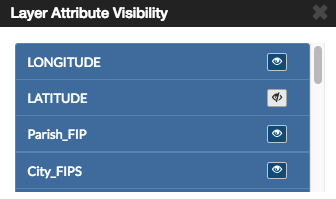
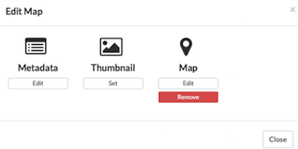
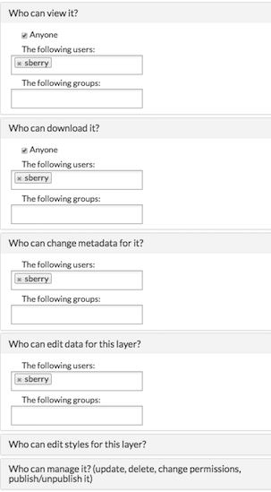

Working with Maps¶
Maps are comprised of various layers and their styles. Layers are available as local layers, or they can be remote layers, served from other web servers. Exchange maps can be manipulated via map zoom and extent, layer ordering, and style.
Create a map¶
Maps can be created multiple ways within Exchange. If you’re starting a new project, you may want to start with a new, blank map. You can also create maps from existing layers and existing maps. The following steps will help you create the map environment you need.
Create a new blank map¶
- Select the Maps link on the Boundless Exchange toolbar.
- Click Create Map in the drop-down menu.

A new map environment will open, and you can begin working.
Create a new map from layers¶
Layers can be used to create maps, and added from either the Explore Layers or Explore Maps section.
- Select the Data link on the Boundless Exchange toolbar, and click Layers in the drop-down menu.

- Click the Plus icon next to the layer you’d like to add to your map. You can select multiple layers. They will display in your workspace until you are ready to build your map.
- Click the Create a map button to add the layers in the workspace to a new map.

Remove a layer from the cart by clicking the X button next to its name.
A new map will open with all of the layers displayed, and listed in the map menu.
Add layers to a map¶
You can add layers to the map from within the map environment using the Add Layer feature. Layers can be added from either the local geoserver within Exchange, or from a remote service.
The local geoserver hosts layers that have been added to Exchange by other registered users. Local layers can be discovered through an advanced search from the Boundless Exchange homepage, from the Explore Layers page, and from within the map.
A remote service is a separately-hosted data service of varying type (OGC, Esri, etc). Remote services appear within the map and in search as layers. Rather than having to re-upload the files found within a particular service to Exchange, an external service’s layers are indexed and allow the user to find them and add them to their map.
Click the Add Layer (+) button in the Layers field.

The Add Layers window will open. A list of available layers will display on the right, but you can refine your search to find specific information.

- Using the map - Zoom in or out to your area of interest. The list of available layers will change to show you what is within the map extent (minus any layers currently on your map).
Zoom to limit the search to data that includes features in the displayed area. Hover your mouse over a layer in the results list. A bounding box will display over the layer’s coverage area. Each layer will tell you whether it is from the local geoserver, or a remote service.

- Keywords - Add keywords to find specific layers. Words associated in the metadata, and the title are used for results. Select the Clear link to remove the filter.

- By owner - Click the checkbox next to an individual’s name to return layers added by that user. If you are collaborating on a project, this is a fast way to find layers from your team members.

- Date Created - Click and drag the time bar to filter layers by their creation date.
- Category - Click the checkbox next to one or more categories to filter layers by their metadata category.
- Once your results have been filtered, select the layers you’d like to add to your map from the results list, and click the Add Layers button. Your layer(s) will now display on your map, and in the layers list.

Change layer order¶
Layers on a map are drawn from bottom to top. The top layer in your list will display on top of any layers below it. Each layer will appear in the order it is displayed in your list. Sometimes a layer may need to be reordered so it can be more clearly displayed.
- Click on the name of the layer you want to reorder.
- Drag the layer up or down to the desired position.
Toggle layer visibility¶
Toggle Visibility allows you to turn a layer’s display off and on without having to remove the layer form the map completely.

- Click the Toggle Visibility button to turn a layer off.
- Click the Toggle Visibility button again to turn a layer back on.
Zoom to data¶
The Zoom to data button allows you to center the map quickly on a particular layer. It is particularly convenient when you need to quickly return to the extent of the data for that layer.
- Click a layer in the layer list.
- Click the Zoom to data button. The map will zoom in and center on that particular layer’s extent.

Important
If a layer’s visibility is dependent on scale, and the data extent is at a lower scale, you will need to zoom in to view the data.
Show layer info¶
Information about a layer is available in the map by clicking the Show Layer Info button. Show Layer Info will include server information, basic metadata, and the projection (SRS).
- Click on a layer name in the layer list to expand the layer options.
- Click the Show Layer Info button.

The Layer Info window will display.

Remove a layer from the map¶
To remove a layer from the map, click the name of the layer you’d like to remove, and click the Remove layer button in the layer tools.

Click the Yes button to confirm.

Get feature information¶
To get information in a vector layer, simply click a feature on the map. Once you click the feature, the information window will display. The point of the information window will touch the feature you clicked.

Change attribute visibility¶
Individual attribute visibility can be turned off and on in a feature window. This can make managing large numbers of attribute fields in a layer easier.
- In the layers list on the map, select on the layer whose attribute visibility you’d like to change. The layer’s additional options will display.
- Click the Show Attribute Visibility button to open the list of attributes for the layer.

- Click on the Toggle Visibility button for an attribute to turn it off and on.

- Select a feature on the map from that layer. The attribute will no longer appear in the feature information window, as it has been toggled off. Repeat these steps to toggle it back on.
Search for locations¶
FFind a specific location on the map simply by typing the name of a place, zip code, address or lat/long (DMS or DD) in the Search Locations text box. Click the search button to return a list of possible matches. Scroll through the list, and select one of the matches. The map will recenter on that location. This is a simple search, and does not allow wildcards.

Using the legend¶
A legend displayed the symbols used for vector layers in a map. It can be toggled off and on to maximize screen space when necessary.

Click the Toggle Legend button to toggle the legend off and on.
Additional map features¶
There are additional features which allow you to change your coordinate display, your full screen extent, and your map scale.
- Click the Toggle Full Screen button to maximize your map environment to the full screen.

- Click the Zoom In (+) / Zoom Out (-) buttons, or click and drag the scroll bar to zoom in and out on the map. Click the Zoom to World button to return to the world view.

- Click the Switch Coordinate Display button, in the lower left corner of your map, to change the coordinate system. Your available options are DMS, DD (or XY) and MGRS. Click the button additional times to cycle through to your desired display. Your scale bar is located just above the coordinate display.

Measure distance or area¶
You can measure distance or areas on your map using the Measure tool.
- To measure an area or distance on the map, select the Measure field. The measure tools will open, and you can select whether you want to measure a line distance, or an area.
- Area - Click the Area button in the Measure tools. Begin drawing by clicking your mouse on your map at your starting point. Click subsequent points around the area you want to measure. To complete your measurement, you will need to ensure you close your polygon by clicking on your starting point.

Line - Click the Length button in the Measure tools. Begin drawing by clicking your mouse at your starting point. Click subsequent points along the route or feature you want to measure.

- To complete your measurement, click your mouse at the end distance. The line will turn from a bold blue to a thin blue line. The distance will display as meters/kilometers, miles or feet, depending which unit you have selected.
- Click the Stop Measuring button to clear your map and measurements.
Save a map¶
Saving a map allows you to maintain your preferences for the next use, as well as makes it available for other Exchange users.
- Click the Save this map button.

- Add a title and an abstract for your map so it is searchable by others. Click the Save button to save your changes. The name will be reflected in the title, and replace “New Map.”

The Map is now saved in the list of maps on the Maps page.
Create a copy of a map¶
You can use an existing map as a starting point for another map. This allows you to incorporate the work others have done without changing their maps.
- Click Maps on the Boundless Exchange toolbar, and select Explore Maps in the drop-down menu.
- Select on the map you would like to copy. This will open the map details page.
Click the Create a New Map button under the Copy this map section.

A new map will open, populated with all of the layers of the map you copied.
- Click the Save this map button on the toolbar.
- Add a new title and an abstract, possibly indicating this is a copy of another map.
- Click the Save Copy button.
Your new map is now saved, and can be accessed from the maps page.
Important
You are only copying the map. Any changes you make to the layer (data set) will affect any maps using that layer. Copying the map would primarily be used to make visual changes. To make changes to the data, it is recommended that you download the layer, and import your own copy.
Managing Maps¶
Every map has its own details page, which provides more information about the map, the metadata and who has what permissions for making edits.
The map details page provides a view of the map, along with information about the map. It also tells you which layers are used in the map.

Download data layers¶
Here you can download the contents of a map that is stored in Exchange. It does not download data from other servers, however.
- Click the Download Map button.
- Select Download Data Layers.
If multiple layers exist, you will be able to select one or more of the available layers.

- Select the layer(s) you want to download individually, or the Start downloading this map button to begin downloading.
Download Web Map Context¶
The Web Map Context (WMC) is an open geospatial consortium (OGC) standard for metadata describing a map service.
Click the Download Map button.
Select Download Web Map Context from the menu.

A new tab will open with the XML for the web map context.
Edit map metadata¶
Metadata plays an important role for maps. It describes the map in a way that the legend does not; why it was created, the date it was published, and who created it, for example. When a map is updated, it is important to update the metadata, as well.
Note: You can only edit the metadata for the map if you have the proper permissions.
Click the Edit Map button.
Click the Edit button under Metadata on the Edit Map menu.
In the metadata page, fill in the fields with information about the map. The more information you provide, the better others will understand your map.
Note: The “Category” field is a mandatory field, and if it has not previously been selected, you will be required to select one at that time.
- Click the Update button to save your changes.
Set map thumbnail¶
By default the thumbnail images for maps will only have the vector layers. In order to include the background map you will need to use the Set Map Thumbnail button.
Pan and/or zoom the inset map on the Map Details page so that it’s centered on the view you would like for the map thumbnail.
Click the Edit Map button.
Click the Set button under Thumbnail on the Edit Map menu.
This will set the map thumbnail with the base map and layers included.

Old Thumbnail

New Thumbnail
Create a custom thumbnail¶
Custom images related to your map can be created, and will display next to the map on the Explore Maps page.
- From the map’s info page, click the Edit Map button.

- Click the Set from File button to browse to the image. Select the image you want to use, and verify it displays in the thumbnail section.

Edit map permissions¶
The map permissions determine which users can view or edit a map. The permissions can be set to establish:
- Who can view it?
- Who can download it?
- Who can change metadata for it?
- Who can manage it (update, delete, change permissions, publish/edit)?
Click the Change Permissions of this Map button in the Permissions section.

Establish the permissions for viewing, editing, and managing according to your needs.
Click the Apply Changes button to save changes.
Remove a map¶
You are able to remove a map from Exchange. It is important to note that this will remove the map for all users.
Click the Edit Map button.
Click the red Remove button under Map in the Edit Map menu.
Click the Yes button to confirm.